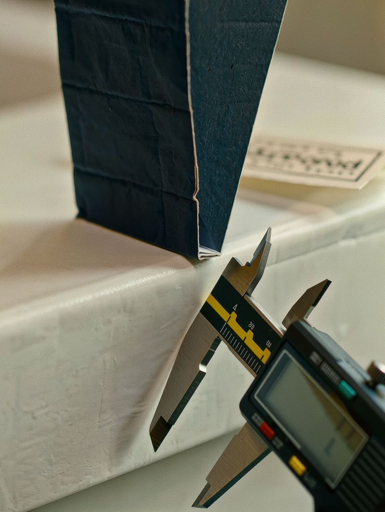

Six stages. One accountable partner.
Every stage ends with something you sign off.
Procurement needs to know who owns each decision and what evidence sits behind it. This is the sequence, the sign-off at each stage, and the checks that run through it.
The six stages
Brief
Discover and specify. We understand the product, packaging requirement, market, quantity and commercial objective, then establish the technical packaging specification.
Source
Source and benchmark. We identify appropriate manufacturing capabilities in the network and evaluate production routes and commercial proposals against each other, quoted on landed value.
Develop
Sample. Structure, material and graphics are developed and prototypes and production samples are coordinated before anything is ordered.
Approve
You approve specifications, samples, artwork and commercial terms, and the quality plan is agreed with you and the factory.
Produce
Produce and inspect. Manufacturing begins under controlled production requirements and quality is monitored throughout, with the Averon team on site at the partner factory.
Deliver
Ship and deliver. Averon coordinates packing, freight booking, export documentation and international shipment, and the file stays open until finished packaging reaches the destination.
Brief, structure, material, graphics, prototype, testing, cost engineering, approval, manufacturing. A programme begins long before production.
Client brief, technical review, sourcing, sample development, commercial quotation, client approval, production, quality control, packing, freight booking, export documentation, international shipment, destination delivery.
You define the requirement. We manage the route from specification to delivery. One partner, one communication channel, one managed process.
Agreed before. Checked throughout.
Quality should not be something checked only when production is finished. Averon establishes quality requirements throughout the packaging lifecycle, so inspection confirms a plan rather than discovering one. Cost competitiveness without losing control.

- Material specificationGrade, grammage, flute and supplier confirmed
- Artwork and dieline approvalFit, bleed, barcodes and legal text on the proof
- Colour standardsPantone and CMYK targets, proof approved
- Production sampleStructure and finish signed off before order
- Technical specificationsThe document the run is checked against
- Colour, registration and print qualityHeld to the approved proof throughout the run
- Coating, die-cut and creasingAccuracy checked in line
- Folding, gluing and dimensionsConstruction measured in line and at final
- Final inspectionAppearance, dimensions, construction, quantity, packing, carton marking
- Shipment readinessDocuments and release; AQL and client procedures where required
Beyond factory price.
A lower factory price does not necessarily create a lower total cost. Averon considers material and production efficiency, print process, finishing, packaging configuration, carton, pallet and container utilisation, freight, lead time, quality risk and rejection risk. The objective is total landed value.
The unit price at the factory gate. The number most comparisons stop at.
Board grade, grammage and finish decide cost, weight and how the pack performs.
Export cartons, pallets and protection decide how much arrives undamaged.
Mode, route and container utilisation, and the documentation between them.
The weeks from order to delivery, and what a missed launch date costs.
Who owns a problem at each stage, and whether anyone checks before it ships.
Delivered on time, to specification, with one party accountable.
Ready to brief a project?
Seven short questions. Answer what you know; we reply with the questions a quotation needs.